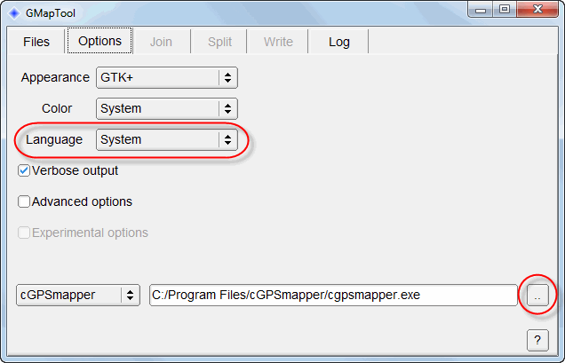
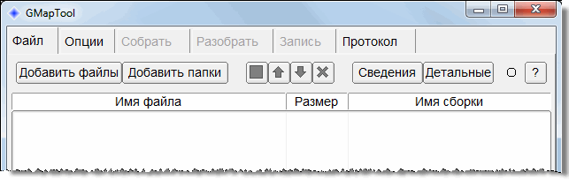
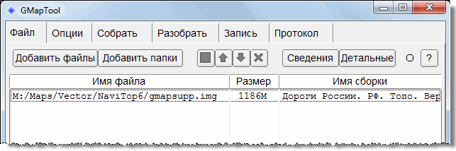
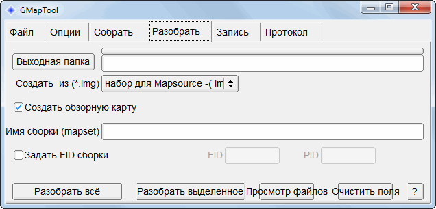
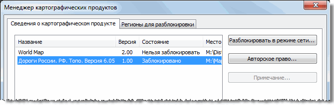
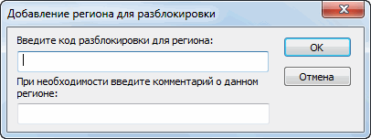

Андрей Коперский — фотографии походов
Фотографии походов, приглашаю в поход
Page Tools
Векторная карта “Дороги России. ТОПО”
Обновление векторной карты “Дороги России. ТОПО” и просмотр карты в программе MapSource
В комплекте с Dakota 20 поставляется карточка microSD с установленной векторной картой “Дороги России. ТОПО” производства Навиком. Карта подходит для прокладки автомобильных маршрутов по нашей необъятной, то есть позволяет использовать Dakota в качестве автонавигатора (хотя по удобству использования Dakota не заменит специализированные автонавигаторы).
Векторная карта содержит большой объем топонагрузки, к которой относятся водные объекты, туристические и охотничьи базы, просеки, лэп, рельеф местности, глубины и многое другое. Уровень детализации достаточен для ориентирования по навигатору в незнакомой местности. Однако, этим применение векторной карты не исчерпывается. Ничего не мешает экспортировать ее в популярную программу MapSource и просматривать на компьютере, а также пользоваться возможностью MapSource отмечать путевые точки и записывать их в навигатор.
Обновление векторной карты
При покупке в моем навигаторе была установлена векторная карта версии 6.04. Компания Garmin предлагает обновление карты через свой сайт. В каждой новой версии добавляются топографические объекты и исправляются неточности. Этот процесс идет непрерывно, и за последний месяц вышли уже две новые версии. На момент написания статьи последней была версия 6.06, обновление до которой ничего не стоило.
Чтобы обновить векторную карту, я зашел на русский сайт Garmin в раздел, посвященный картам. Там увидел ссылку на программу MapChecker. Ее нужно скачать и сразу запустить. Программа очень маленькая и не требует инсталляции. Не стоит записывать ее на жесткий диск. Лучше проверять обновления карт, каждый раз скачивая MapChecker с сайта.
При подключенном навигаторе программа предложит выбрать съемный носитель данных, на котором установлена предыдущая версия карты. Когда Dakota 20 подключен к компьютеру, в операционной системе автоматически регистрируются два съемных носителя: первый с именем GARMIN соответствует внутренней памяти навигатора, второй с именем NULL соответствует карточке microSD.
 Имя microSD можно изменить через проводник Windows, как это делается
для любой флэшки: щелчок правой кнопкой мыши по значку съемного
носителя > Пункт контекстного меню Свойства.
В верхнем поле задается имя карточки.
Имя microSD можно изменить через проводник Windows, как это делается
для любой флэшки: щелчок правой кнопкой мыши по значку съемного
носителя > Пункт контекстного меню Свойства.
В верхнем поле задается имя карточки.В MapChecker нужно выбрать карту microSD и нажать Далее, как показано на следующем рисунке.
Программа проверит версию векторной карты и, если доступна более новая версия, выдаст ссылку для скачивания инсталлятора, как показано на следующем рисунке.
Щелкните по нижней ссылке, чтобы начать скачивание инсталлятора. Он имеет размер больше гигабайта, а скачивание идет достаточно медленно. Поэтому наберитесь терпения.
После скачивания остается запустить инсталлятор и следовать его инструкциям. Обновление карты продолжается от получаса и дольше, поскольку на microSD записывается большой файл с топографическими данными.
Установка программ для экспорта в MapSource
Прежде всего нужно иметь саму программу MapSource. Мне не понятна позиция Garmin по поводу ее продажи. MapSource входит в состав различных пакетов карт, приобретаемых на DVD, однако как купить программу отдельно от карт, я не понял. С другой стороны, на сайте Garmin свободно предлагаются обновления этой программы. Причем обновления являются полноценными инсталляторами. Но вот выполнить инсталляцию можно, только если у вас установлена любая версия MapSource, хотя бы самая ранняя.
Предположим, MapSource установлен. Понадобятся еще две бесплатные программы: GMapTool и cGPSmapper. Программа GMapTool переводит векторную карту “Дороги России. ТОПО” в формат, понятный для MapSource. Этот процесс называется разборкой, поскольку единый файл векторной карты разбивается на отдельные файлы с топографическими данными регионов России. Программа cGPSmapper автоматически запускается во время работы GMapTool для создания обзорной карты.
Разборка векторной карты, а другими словами ее декомпиляция, является
нарушением лицензионного соглашения с компанией Навиком. Лучше не
нарушать лицензионное соглашение. Но если вы хотите только проверить
программу GMapTool и сразу удалите результат ее работы, тогда читайте
дальше.GMapTool можно скачать со страницы www.anpo.republika.pl. Усеченную, но бесплатную версию cGPSmapper можно скачать со страницы www.cgpsmapper.com/buy.htm (имеется также коммерческая версия, но ее функции нам не нужны). Установка обеих программ интуитивно понятна.
Экспорт векторной карты в MapSource
Ниже приведена инструкция по экспорту векторной карты “Дороги России. ТОПО” в MapSource.
-
Подключите Dakota 20 к компьютеру и скопируйте файл gmapsupp.img с microSD (каталог GARMIN) на компьютер во временный каталог. Допустим, это будет каталог C:\Temp.
Будьте
осторожны, не удалите исходные файлы с расширением img и unl на
microSD. -
Создайте на жестком диске целевой каталог для векторной карты после преобразования в формат MapSource. Предположим, это будет каталог C:\Garmin\maps\rusTopo.
-
Запустите программу GMapTool и перейдите на вкладку Options.
Отображается следующий диалог.

-
Задайте конфигурационные параметры.
-
В списке Language выберите язык “Русский”. Интерфейс станет привлекательнее.
-
В нижней части диалога укажите путь к исполняемому файлу программы cGPSmapper.
-
-
Перейдите на вкладку Файл.
Отображается следующий диалог.

-
Нажмите Добавить файлы и укажите файл C:\Temp\gmapsupp.img.
Файл будет добавлен в список.

-
Перейдите на вкладку Разобрать.
Отображается следующий диалог.

-
Настройте параметры экспорта карты.
-
Нажмите Выходная папка и выберите каталог для вывода преобразованной карты (в нашем примере — C:\Garmin\maps\rusTopo).
-
В списке Создать из (*.img) выберите значение “набор для Mapsource”.
-
-
Нажмите Разобрать всё.
Начнется экспорт карты. При этом программа перейдет на вкладку Протокол и будет отображать ход экспорта. Ниже показан фрагмент протокола.
Разборка всех карт. Input file: C:/Temp/gmapsupp.img. Reading file C:/Temp/gmapsupp.img. Split map C:/Temp/gmapsupp.img. Write map 00001790 -> 1790_mdr.img, file 8962048, header 2000h, block 8192 ... Write unl gmaptool00.unl, codes 1 Write file mapset.mp Write file mapset.tdb Write file mapset.mdx ... Maps uploaded! C:/Garmin/maps/rusTopo/mapset.img is created. Done! File :C:/Garmin/maps/rusTopo/mapset.img is ready to use Execution time: 0.82 s
Об успешном завершении экспорта говорят последние строки, в частности
File :C:/Garmin/maps/rusTopo/mapset.img is ready to use.
Также обратите внимание на строку
Write unl gmaptool00.unl, codes 1
в которой сообщается о созданном файле gmaptool00.unl. Его содержимое понадобится на следующем этапе для активации карты.
Активация векторной карты
На предыдущем этапе мы с помощью GMapTool преобразовали векторную карту в формат MapSource. Карта в виде набора разных файлов была записана в каталог C:/Garmin/maps/rusTopo. Для работы с картой этого недостаточно. Требуется еще указать программе MapSource на наличие новой карты и разблокировать ее.
Во время экспорта был автоматически создан командный файл C:/Garmin/maps/rusTopo/install.bat. Чтобы подключить карту к MapSource, достаточно запустить этот файл и два раза нажать Enter. Удобно, не правда ли?
Затем запустите MapSource, и вот он сюрприз. Программа сообщает, что новая карта заблокирована.
Еще несколько шагов.
-
Нажмите Разблокировать карты.
Отображается менеджер картографических продуктов, в котором наша карта имеет состояние “Заблокировано”.

-
Перейдите на вкладку Регионы для разблокировки и нажмите Добавить.
Отображается диалог ввода кода разблокировки.

-
Перейдите в каталог C:/Garmin/maps/rusTopo и откройте файл gmaptool00.unl в текстовом редакторе.
-
В точности скопируйте строку символов (это и есть код разблокировки) из файла в верхнее поле диалога.
-
Нажмите ОК.
Ели вы все сделали правильно, карта будет разблокирована и отображена в MapSource.